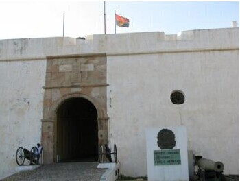

- 安哥拉国旗
- 安哥拉国徽
- 安哥拉标志性建筑
- 安哥拉地理位置
安哥拉概况
安哥拉位于非洲西海岸
人口概况
2260万（2014年估计）。主要有奥温本杜(约占总人口的38%)、姆本杜(25%)、巴刚果(14%)、隆达等民族。官方语言为葡萄牙语, 主要民族语言有温本杜语、金本杜语和基孔戈语等。49%的人信奉罗马天主教, 13%的人信奉基督教新教, 其余居民中大部分人信奉原始宗教。
安哥拉经济
安哥拉经济以农业与矿产为主，也有炼油工业，主要分布于卡宾达的滨海地带。食品加工、造纸、水泥及纺织等工业也比较成熟。安哥拉国力因石油生产而快速成长。
实行市场经济, 有一定的工农业基础, 但连年战乱严重影响经济发展, 基础设施遭到破坏。2013年2月，安哥拉国民议会通过2013年国家财政预算。总额6.64万亿宽扎（约663.6亿美元），收支基本平衡，其中社会领域支出占33.5%，公共管理支出占24.6%，采购及服务支出占17.8%，国防和公共安全支出占18%。安将通过加大对非石油产业扶持，推动国民经济各领域均衡发展，加强经济多元化，实现国家长期可持续发展。同时，将继续调控通货膨胀，实施稳健的债务和货币政策，规范金融行业，维护宏观经济稳定。安哥拉现已成为撒哈拉以南非洲第三大经济体和最大引资国之一。石油是国民经济的支柱产业。
外交关系
奉行和平共处和不结盟的对外政策；主张在相互尊重主权、互不干涉内政、平等互利的基础上，同世界各国建立和保持外交关系；要求建立国际经济新秩序。现为联合国、不结盟运动、非洲联盟、南部非洲发展共同体、中部非洲国家经济共同体、葡萄牙语国家共同体、石油输出国组织、七十七国集团、世界银行、国际货币基金组织、国际民航组织、世界贸易组织等国际和地区组织成员。与100多个国家建立了外交关系。2002年实现和平后，安政府外交工作的主要目标是巩固和平和战后重建，把经济外交作为外交工作重点，寻求更多的外援和投资，积极参与国际和地区事务，努力提高在国际和地区事务中的影响力，为地区和平与稳定作出贡献。截止2014年安哥拉是联合国人权理事会成员（2010-2013年），非盟和平与安全理事会轮值主席国（2012-2014年）。
经贸往来
2012年，产品主要出口到中国（占安当年出口总额的45.8%）、美国（13.7%）、印度（11%）、南非（4.1%）、其他地区（25.4%）；进口产品主要来自中国（占安当年进口总额的20.8%）、葡萄牙（19.5%）、美国（7.7%）、南非（7.1%）、其他地区（44.9%）。
主要出口石油、钻石、天然气、咖啡、剑麻、水产品及其他养殖产品、木材、棉花等，主要进口机电设备、交通工具及其零部件、药品、食品、纺织品等。
截止2014年安哥拉是中国在非洲第二大贸易伙伴。2012年，中安贸易额375亿美元，同比增长35.6%，其中我方出口额40亿美元，同比增长45.1%，进口额335亿美元，同比增长34.6%。中国主要从安哥拉进口原油，向安哥拉出口运输工具、钢材、电器及电子产品等。2011年，两国签署劳务合作协定。
截止2014年安哥拉是我国在非洲的第二大承包工程市场。截至2012年底，中国在安哥拉累计签署承包劳务合同额402亿美元，完成营业额295亿美元。我国在安哥拉有民营企业超过100家，在安人员十余万人。